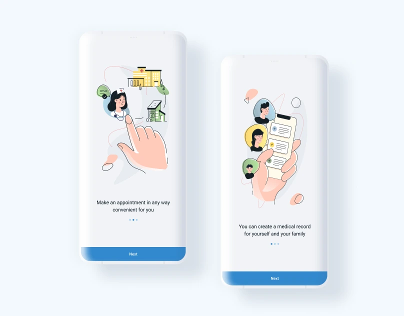
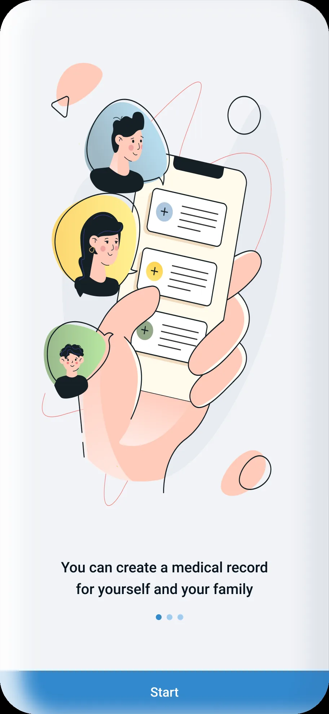
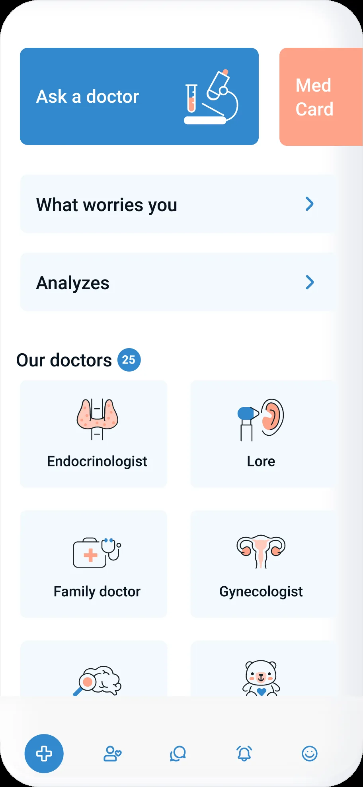
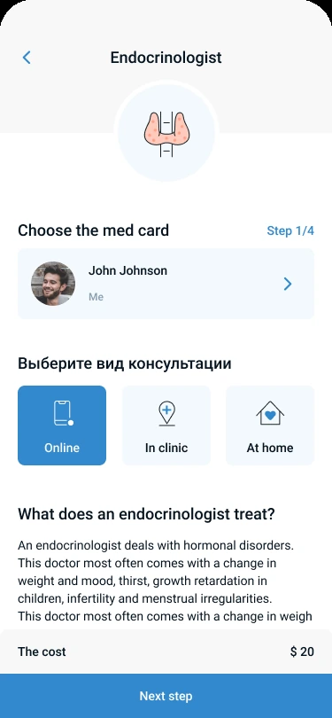
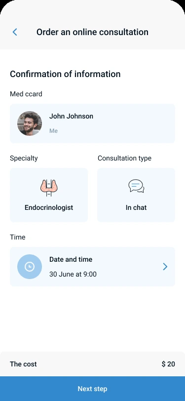

DobroDoc+
Lead UX — user interviews, IA, mobile prototyping
Redesign cut time-to-booking by 40% in usability tests

01 · Booking was harder than the illness
Problem & Context
DobroDoc+ already existed — but the original app was outdated and frustrating to use. Booking a doctor's appointment required more effort than the illness itself.
The core pain: when you're sick, the last thing you want is to navigate a broken interface or travel to a clinic just to get in the queue. Busy adults needed a way to see a doctor without leaving home.
The goal was a full redesign — faster booking, clearer navigation, and an experience that works when you feel your worst.
02 · From audit to handoff
Process
1.0
UX Audit
Analysed existing app — broken flows, inconsistent patterns, key drop-off points.
Audit report2.0
User Research
Interviewed busy adults about medical apps and clinic visits.
Interview notes3.0
UX Strategy
Defined redesign priorities. Goal: booking under 3 taps, eliminate redundant screens.
Strategy doc4.0
Wireframes
Redesigned core flows — booking, doctor search, medical history.
Lo-fi wireframes5.0
Usability Study
Two rounds — lo-fi and hi-fi — with busy adults.
Usability report6.0
Mockups & Hi-fi
Full visual redesign with new component library.
Hi-fi prototype7.0
Hand-off
Specs, annotations, component documentation.
Figma handoff03 · Strategic foundation
Artifacts: UX Strategy
| Vision | Accessible telemedicine platform for everyone, regardless of location or schedule |
| Project stage | Full product development and launch |
| Business goals | 1. Reduce clinic overcrowding by 30% 2. 50,000 users within first 6 months 3. 90%+ patient satisfaction 4. Subscription + per-consultation revenue |
| User goals | 1. Book without calling during business hours 2. Consult online for minor concerns 3. Access medical history in one place 4. Manage family appointments |
| Design principles | Trust & Security · Simplicity · Empathy · Reliability · Accessibility |
| Success metrics | Booking completion > 85% Video success rate > 95% NPS > 70 Avg booking time < 3 min |
04 · Understanding the users
Artifacts: Research & Discovery
01
Stakeholder interviews
7 stakeholders: Medical Director, COO, Head of Product, Compliance Officer.
02
Surveys
250 patients and 35 healthcare providers. 84% wanted online consultations. 73% found traditional booking inconvenient.
03
User interviews
15 patients + 8 doctors, 60-min sessions.
05 · Multi-scenario flow
Artifacts: User Flow
Overview flow covering 5 user scenarios: symptom search, appointment booking, video consultation, consultation history, and medical certificates.
06 · Key screens in the redesign
Mockups
Final hi-fi mockups covering the core booking flow — from onboarding to appointment confirmation.

OnboardingOnboarding — create a medical card for yourself and your family

HomeHome — clinic dashboard with doctor categories and quick actions

Doctor selectionSpecialist — choose med card, consultation type (online, in clinic, at home)

ConfirmationConfirmation — summary with med card, specialty, consultation type, date & time
07 · Two rounds of testing
Usability Findings
Round 1 — Lo-fi prototype
Findings
- Users wanted doctor availability before clicking profiles
- Symptom checker felt untrustworthy — no disclaimers
- Family profile switching was confusing
Changes made
- Availability indicators added on doctor cards
- Symptom checker redesigned with disclaimer + emergency warnings
- Persistent family switcher added at top of screens
Round 2 — Hi-fi prototype
Findings
- Users wanted connection status before video call
- 100% of users loved digital prescription feature
- Users wanted appointment reminders before consultations
Changes made
- Connection quality indicator + test call added
- Push notifications with reminders + checklist
- Post-consultation summary auto-sent to email
08 · What changed after testing
Mockups: Before / After
01 — Doctor card
Before
Name and specialisation only
After
Availability indicator — green dot + next free slot on card
02 — Symptom checker
Before
Plain input form, no context
After
Medical disclaimer + emergency warning, AI match with doctor recommendation
03 — Family switcher
Before
Buried in profile settings
After
Persistent switcher at top of every screen
04 — Pre-call screen
Before
Direct join button only
After
Connection quality check + test call option
05 — Post-consultation
Before
Session ends, nothing sent
After
Summary card in-app + auto email with diagnosis and prescription PDF
09 · 40% faster booking
Outcome
Redesign launched in late 2020. The updated app reduced time-to-booking by 40% in usability tests. Digital prescriptions and post-consultation summaries became the most praised features in early feedback.
The app is live on both platforms today.
10 · Looking back
Reflection
What I'd do differently
Start with a design system from day one. Component inconsistencies between screens slowed the hi-fi phase and required cleanup before handoff.
What I learned
Two rounds of usability testing caught fundamentally different issues — lo-fi revealed structural problems, hi-fi surfaced emotional and trust concerns. Both are non-negotiable for a healthcare product.